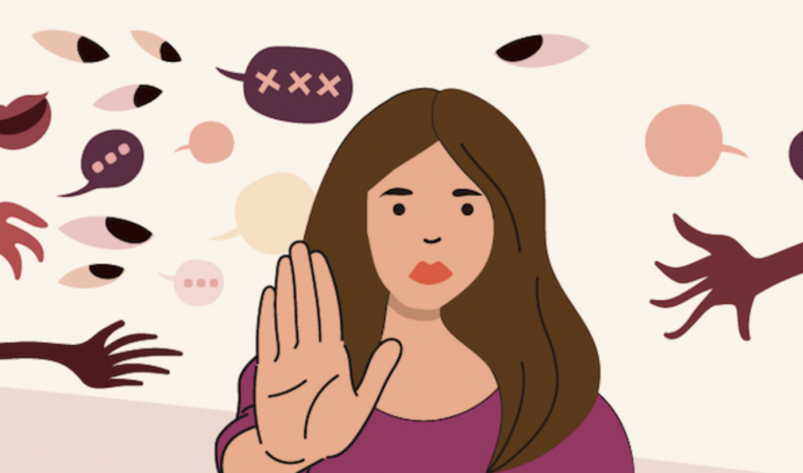
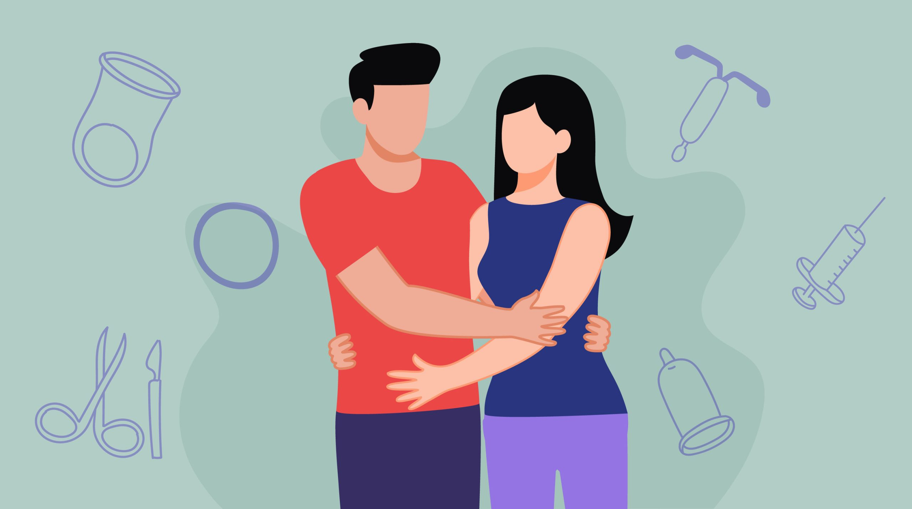
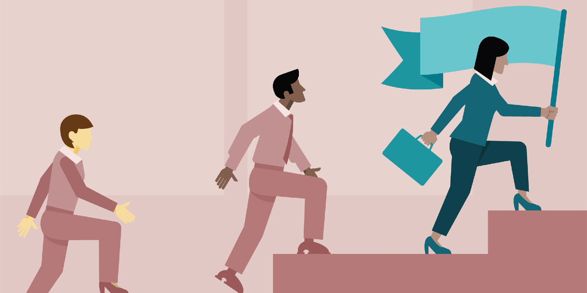

Escucha un breve mensaje sobre la importancia de la igualdad de género antes de conocer los objetivos principales del ODS 5.
¿Qué busca la ODS 5?
La Organización Mundial de la Salud (OMS) apoya la agenda de la ONU para:
Eliminar la discriminación y la violencia contra mujeres y niñas.
Asegurar la participación plena en la toma de decisiones políticas, económicas y públicas.
Garantizar el acceso universal a la salud sexual y reproductiva.
Eliminar prácticas nocivas como el matrimonio infantil, el matrimonio forzado y la mutilación genital femenina.
Reconocer el trabajo no remunerado y promover igualdad en la propiedad, la herencia y los servicios financieros.
Subtemas del ODS 5
Prevención de la violencia de género
La violencia contra mujeres y niñas es una de las principales barreras para alcanzar la igualdad. Según ONU Mujeres (2022), una de cada tres mujeres ha sufrido violencia física o sexual en algún momento de su vida.

Cita en el texto: (ONU Mujeres, 2022)
Salud sexual y reproductiva
La salud sexual y reproductiva es un componente fundamental para el bienestar general y el desarrollo socioeconómico de las naciones. La Organización Panamericana de la Salud (OPS, s. f.) destaca que garantizar el acceso equitativo a servicios integrales y de calidad en esta materia es clave para reducir las brechas de género y promover los derechos humanos.

Cita en el texto: (Organización Panamericana de la Salud [OPS], s. f.)
Liderazgo y participación política
La participación de las mujeres en la política fortalece la democracia y la toma de decisiones inclusivas. Naciones Unidas (2023) resalta que la representación equitativa mejora la calidad de políticas públicas.

Cita en el texto: (Naciones Unidas, 2023)
Nuestra Iniciativa
Este video presenta una visión general de nuestros proyecto y el impacto de las acciones para promover la equidad de género en el ámbito educativo, laboral y comunitario.
Conclusión
Alcanzar la igualdad de género contemplada en el ODS 5 no es únicamente una meta ética o de derechos humanos, sino el motor fundamental para el desarrollo sostenible, la salud pública y el progreso de las naciones. La erradicación de la violencia de género, la garantía en el acceso equitativo a la salud sexual y reproductiva, y la promoción del liderazgo femenino son pilares interconectados que fortalecen la democracia y estimulan el crecimiento económico inclusivo.
Por consiguiente, el cumplimiento de la Agenda 2030 exige una acción coordinada entre gobiernos, instituciones académicas y la sociedad civil para desmantelar las barreras culturales e institucionales existentes. Solo mediante el empoderamiento pleno de las mujeres y niñas y la inversión en programas preventivos e inclusivos será posible consolidar sociedades verdaderamente justas, equitativas y preparadas para los desafíos globales.